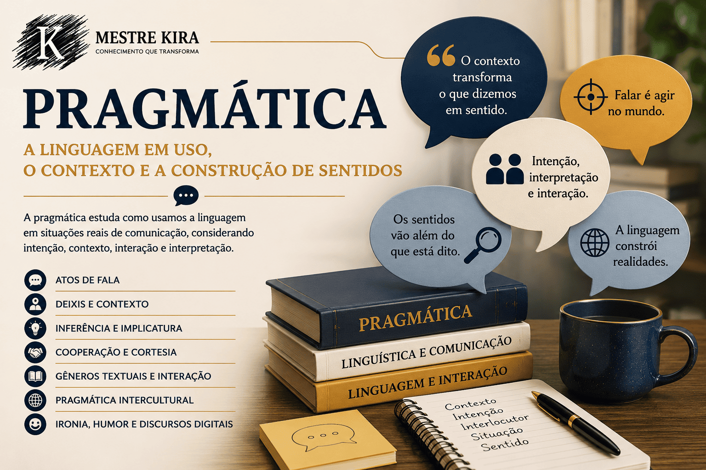

Pragmática: linguagem, contexto e construção de sentidos
A Pragmática é uma área da Linguística que estuda o uso da linguagem em situações reais de comunicação. Diferentemente de abordagens que observam apenas a estrutura das palavras e frases, a pragmática analisa como os sentidos são construídos a partir do contexto, das intenções dos falantes e das inferências realizadas pelos interlocutores.
Essa área é fundamental para compreender fenômenos como ironia, sarcasmo, implícitos, atos de fala, deixis, cortesia, gêneros textuais e comunicação digital. Em outras palavras, a pragmática ajuda a entender não apenas o que é dito, mas também o que se pretende comunicar.
Nesta seção do Mestre Kira, você encontrará conteúdos didáticos sobre pragmática, contexto, interação, discurso, inferência, implicatura, comunicação intercultural e sentidos produzidos nas redes sociais e nos discursos midiáticos.

O que você encontrará nesta seção
Introdução à Pragmática;
Uso da linguagem em contexto;
Deixis e referência contextual;
Teoria dos atos de fala;
Princípio da cooperação e cortesia;
Inferência e implicatura;
Pragmática e gêneros textuais;
Pragmática intercultural;
Ironia, sarcasmo e humor pragmático;
Pragmática digital e redes sociais.
Os conteúdos são indicados para estudantes da educação básica, vestibulandos, graduandos em Letras, professores, pesquisadores e leitores interessados em compreender como a linguagem funciona nas interações sociais.
Os conteúdos desta seção são produzidos por Leildo Gonçalves, professor de Língua Portuguesa, pesquisador e criador do Mestre Kira, projeto educacional voltado ao ensino de linguagem, redação, literatura e tecnologia aplicada à educação.